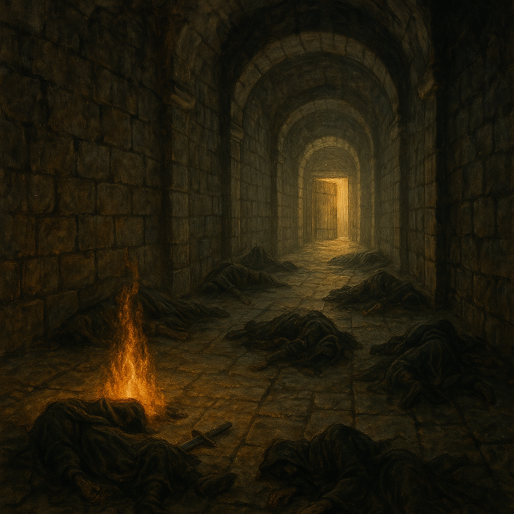

Chapter 3: The Spirit of Lorin
Beneath the Temple

Beneath the Temple
15048日期未知
換班時，Uko 準備要休息，而 Samael 因為他的渣男行徑，決定好好教訓他一番，便刻意用走音的魯特琴在他面前彈奏，搞得 Uko 難以入睡。後來，Jiaheng 也利用休息的時間和 Samael 學習了彈奏魯特琴的基礎。
眾人起床後，Jiaheng 和 Midori 決定嘗試用魔法驅散 Midori 體內的邪惡存在，也順利成功了。當他們試圖也對 Trisha 驅魔時卻不知道為什麼失敗了。
Trisha 雖然傷心，但他為了鼓舞同樣失望的夥伴們，念了一首妖精家喻戶曉的詩 «洛林精神»，講述為了自由，為了自己所追求的價值去反抗、去爭取。除了 Ron 外，所有人都感受到了這首詩象徵著與拉索斯對抗的意念，幾位冒險者甚至注意到了 Trisha 身上散發出了微弱的光暈。隨後，Trisha 擁抱了 Midori，也激勵著夥伴們繼續向前冒險，並起身走入了下一個房間。
為了彰顯 Jiaheng 除去 Midori 體內邪惡的事蹟，Midori 懇求 Usioni 在牆上刻了一個碑文，作為對 Jiaheng 的感激與紀念。
打開了下一道門，前方是無止盡的長廊。冒險者們走了兩個多小時，突然聽見前方傳來一聲慘烈的叫聲，也發現遠端長廊的盡頭，似乎有個人形。冒險者們做好準備，向前衝去，而遠方的多個身影紛紛站起，一隻遊魂與他喚起的七隻幽靈和冒險者們正面交鋒。在這場戰役中，幾位冒險者陷入昏迷，幸好有被成功救起，最終也成功擊滅遊魂和幽靈。
倒臥在長廊盡頭的，是七具屍體，身著拉索斯教的長袍，且各自配戴一把刻有拉索斯經文的匕首，上面的血跡才剛剛乾涸。冒險者們放了把火，將屍體燒了，而 Usioni 也在火堆中跳起了起火之舞，Trisha 也在屍體旁閉上雙眼祈禱，並默默流下了淚水。
一切結束後，冒險者們推開了前方的木門，出現在他們眼前的，是一個城鎮的巷弄。眾人紛紛趕了出去，只有 Uko 和 Trisha 還在地下城內。Trisha 告訴 Uko 自己不該繼續跟著台北市議員們，因為自己會拖累大家的。他誠實地告訴 Uko，拉索斯教承諾他如果完成任務，會將他的父母釋放，所以他才自願和拉索斯教要求執行任務，而且任務內容是要將台北市議員的團體分崩離析，甚至一一殺死。但是因為感受到了團隊中大家的善意，他努力想抵抗腦中拉索斯教的聲音。Uko 放在他身體內的石頭，則讓他每一次想要抵抗拉索斯時，頭部劇烈陣痛。
Trisha 說完後便回頭走入地下城，Uko 則向 Trisha 發表了他的肺腑之言，甚至衝了過去抱著了淚流滿面的 Trisha。最後，Uko 將 Trisha 公主抱起來，帶他離開了地下城。
地下城外，Paladin 突然發現，這是他的家鄉 Korringfield（寇林菲爾德），而 Usioni 撿起了一張掉落地上的傳單，上面是冒險者們（除了 Trisha 和 King Knicol 外）的肖像，寫著「沃瓦倫的惡魔」，而巷口外的幾位人民朝著他們指指點點。隨後，一位年長的女性偷偷摸摸地走入了巷內，Paladin 也認出了他是自己導師 Syr Flaerry（弗列里爵士）的夫人。弗列里爵士夫人悄悄地告訴冒險者們不要擔心，他會保護他們的。